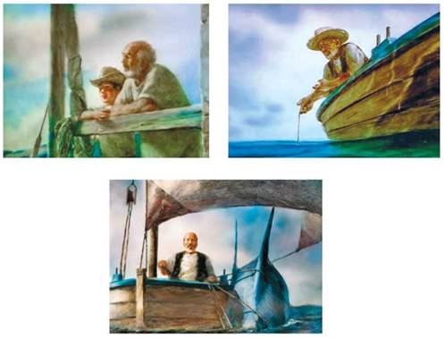

Старий і море.Твір у мистецтві
До читачів ХХІ ст. книжки приходять не лише в паперовому або електронному варіантах, а й як екранізації та картини. Щоправда, не кожний твір художньої літератури став мультфільмом, як повість Е. Хемінгуея «Старий і море».
Короткометражний анімаційний фільм за однойменною повістю зняв режисер О. Петров у 1999 р. У роботі над ним узяли участь представники з різних країн — Росії, Канади та Японії. Мультфільм отримав багато нагород, зокрема й одну з найпрестижніших — премію Американської кіноакадемії «Оскар».
Ця робота тривала два з половиною роки, протягом яких О. Петров разом із сином Дмитром намалювали понад 29 000 кадрів. Технікою анімації фарбою на склі (маніпулювання на склі, як правило, олійними фарбами повільного висихання) у світі володіють лише декілька художників-мультиплікаторів. Малюючи картини, О. Петров використовував не лише різноманітні пензлі, а й кінчики пальців («живий живопис»).
Художник фотографував кожен малюнок, нанесений на скляне полотно (їх називають «брезентами»), що в чотири рази перевищувало розміри аркуша А4. Так малюнок перетворювався на кадр. Далі О. Петров вносив у нього невеличкі зміни й фотографував наступний кадр. Для створення мультфільму також застосовували технологію комбінованої зйомки з багатократною експозицією.
Це була чи не найточніша комп'ютерна система управління рухом камери IMAX, яку коли-небудь використовували для зйомок анімаційного фільму. Зауважимо, що фільми, зняті за технологією IMAX, демонструють на величезних форматах, які досягають висоти семиповерхового будинку.

Кадри з мультфільму «Старий і море» за однойменною повістю Е. Хемінгуея (реж. О. Петров, Росія, 1999 р.)
Мультфільм виконаний у характерному для О. Петрова стилі романтичного реалізму. Люди, тварини та пейзажі намальовані й анімовані в напрочуд живій манері. Водночас певні епізоди твору є спробами митця візуалізувати думки, спогади й сни героя. Наприклад, сцена, у якій моряк бачить уві сні себе та марліна як двох братів, які пливуть крізь простори моря й неба.
І технологія зйомки, і техніка виконання малюнків спонукають глядачів переосмислити погляд на повість Е. Хемінгуея. Притча про боротьбу людини із собою, старістю, сучасним світом і стихією в мультфільмі відступає на другий план. Перше, що бачить глядач у кадрі, — це природа, вона і є головним героєм для режисера. Недаремно всі обличчя людей у фільмі — розмиті.
Інший погляд на історію Е. Хемінгуея представлений у картинах молодої харківської художниці С. Шульц. За часів незалежної України вона першою проілюструвала видання повісті «Старий і море», яка вийшла друком у 2017 р. «Це одне з найкрасивіших видань “Старого і моря”, які я коли-небудь бачив», — зазначив М. Катакіс, керівник Літературної фундації Е. Хемінгуея. На обкладинці зображений чоловік, який натрудженою рукою підпирає обличчя зі зморшками, його погляд сповнений утоми.